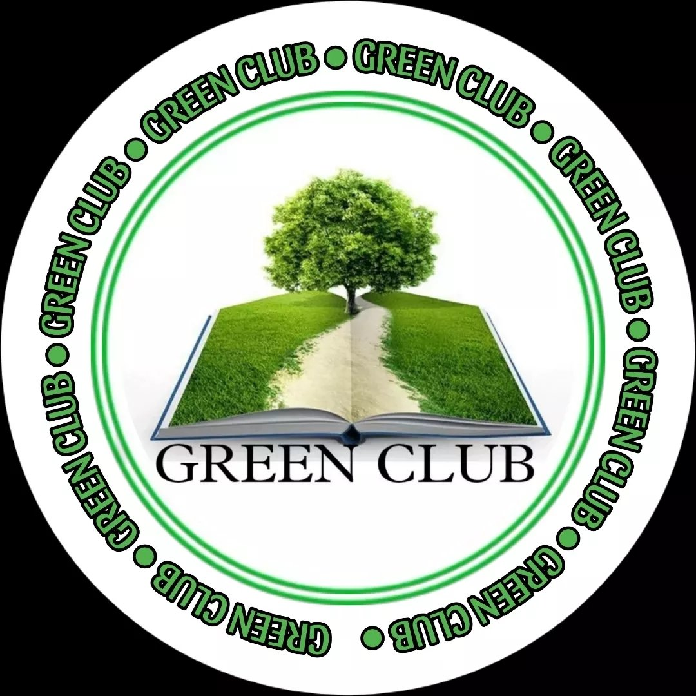

Our Environmental Clubs
✅ "Not Me But You" — A call to serve, not self, but society.

National Service Scheme (NSS)
The National Service Scheme (NSS) is a student-led initiative that promotes community service and social responsibility. Through cleanliness drives, awareness campaigns, health camps, and rural outreach programs, NSS volunteers contribute to societal well-being while developing leadership, empathy, and teamwork.
Environmental Drives
Blood Donation Camps
Social Awareness
Community Outreach

Green Club
The Green Club is a student-driven initiative focused on environmental sustainability and ecological awareness. Through campaigns, clean-up drives, plantation programs, and educational workshops, the club fosters a culture of responsibility and respect for the planet.
Tree Plantation
Waste Management
Water Conservation
Eco Awareness Drives